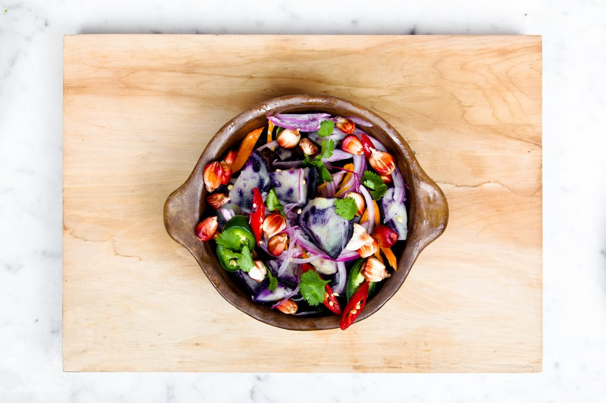

Podróżnicze
Dzięki szybkiemu transportowi świat nam się znacząco skurczył, jednak nadal nie każdy jest w stanie dotrzeć we wszystkie miejsca, o których marzy. W kategorii tej możemy znaleźć książki, dzięki którym będziemy podróżować w wyobraźni, nie ruszając się z własnego fotela. Znani ekscentryczni podróżnicy odkryją przed nami miejsca, w które trudno trafić bez odpowiednich przewodników lub dzięki wyjątkowej determinacji w odkrywaniu jeszcze mało ucywilizowanych rejonów świata.
Psychologiczne
Psychologia poznawcza, psychologia rozwoju człowieka, psycholingwistyka, psychologia społeczna, psychologia rozwoju osobowości – to tylko przykładowe dziedziny z naszej szerokiej oferty literatury psychologicznej. A przecież psychologia to nie tylko domena naukowców i specjalistów - fascynuje większość z nas, niezależnie od wykształcenia i wykonywanego zawodu. Chęć poznania czynników, rządzących psychiką człowieka i kierujących jego zachowaniem, pragnienie rozumienia i umiejętności kształtowania relacji międzyludzkich, wniknięcia w świat i stany emocjonalne innej osoby, wreszcie problemy spotykane na co dzień – to częste motywy, które powodują, że sięgamy po książki psychologiczne, poradniki, opracowania popularne i naukowe.
Gotowanie

Kuchnia, diety i przepisy to dział dla każdego, kto pragnie się odżywiać zdrowo lub szuka inspiracji na nowe potrawy. Znajdziesz tu zarówno książki słynnych osób - gwiazd telewizji czy blogerów, jak i znanych dietetyków i cenionych autorów piszących o zdrowym odżywianiu. Mamy tu pozycje poświęcone diecie wegańskiej i wegetariańskiej. Znajdziesz też poradniki dotyczące prowadzenia diety bezglutenowej. Są tu również publikacje omawiające szeroko zastosowania i zalety poszczególnych warzyw czy owoców. Jeśli szukasz profesjonalnej pomocy i kulinarnych inspiracji, kategoria ta jest idealna dla Ciebie!
Zdrowie

Koniecznie sprawdź nasz bogaty zbiór książkowych inspiracji dotyczących kuchni i diety. Są to książki kucharskie oraz poradniki stworzone z myślą o tym, by pomóc Czytelnikowi urozmaicić dietę lub zmienić nawyki żywieniowe. Często przecież szukamy nowych pomysłów lub odmiany. Często myślimy sobie, że warto byłoby spróbować czegoś nowego. Na półkach sklepowych odkrywamy produkty nieznane nam wcześniej i zastanawiamy się, co też pysznego można by z nich przygotować.
Dla dzieci

Czy wiesz, co się stanie, gdy dziecięca wyobraźnia spotka na swojej drodze dobrze napisaną, wciągającą książkę? Z tego spotkania może wyniknąć tylko jedno: wspaniała pasja, która będzie trwała przez całe życie! Jeśli chcesz zarazić nią także swoje dziecko, w tej kategorii znajdziesz tysiące tytułów, przeznaczonych wyłącznie dla najmłodszych czytelników.
Czy szukasz przygód? Zapierających dech w piersiach i mrożących krew w żyłach opowieści? Czy nie są Ci obojętne losy Geralta z Rivii lub ciekawi Cię, co dzieje się w Siedmiu królestwach? Drogi Czytelniku - trafiłeś doskonale! To właśnie w dziale fantastyki odwiedzisz krainy pełne magii i czarów, gdzie okrucieństwo ściera się z czystością, gdzie każdy dzień może być tym ostatnim... ale warto. Zapewniam Cię, że warto choć na chwilę przenieść się do jednego z tych światów!